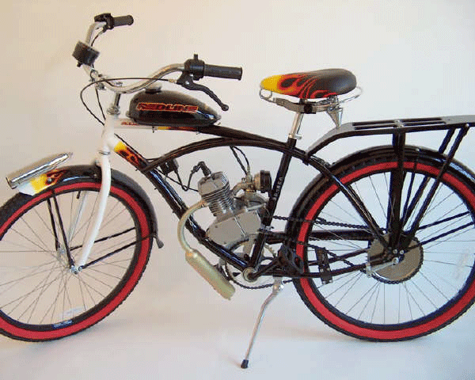

Torker Classic Motorized Bicycle

-
It has a 2 cycle 80cc, 3.5 hp. Engine, it can reach speeds of 40+ mph.
- This motorized Bike can go 150 miles on a tank of gas.
- You can pedal like a normal bike or release the clutch
and off you go like a motorcycle.
- It has a twist throttle and a manual clutch.
- The gas powered bicycle comes with a Flamed chain guard,
F&R fenders, rear retro rack, speedometer,
bullet-style front light (batteries not included) and kickstand.
- Highlights: 26inch, 36-spoke alloy wheels w/coaster brake,
custom Hawg grips, and springer seat (w/matching flames).